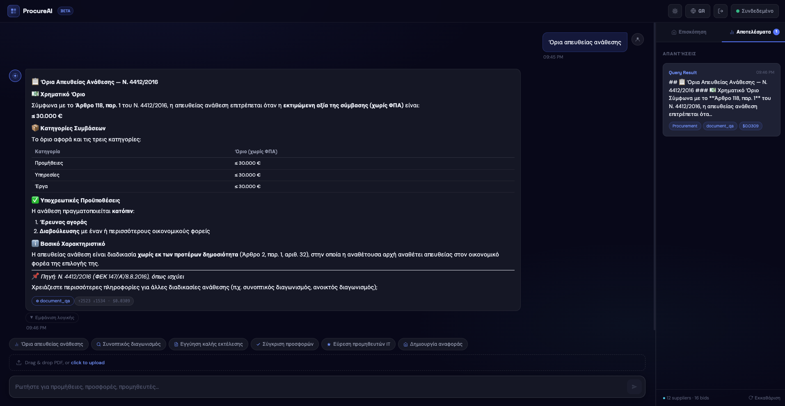
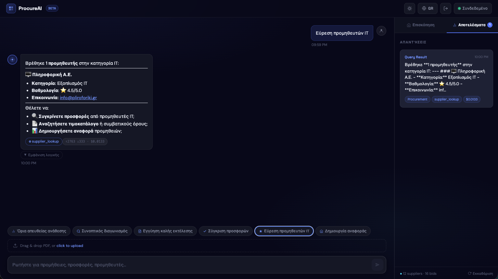
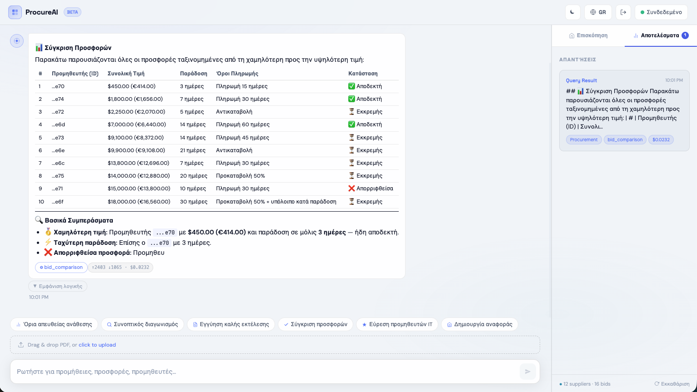
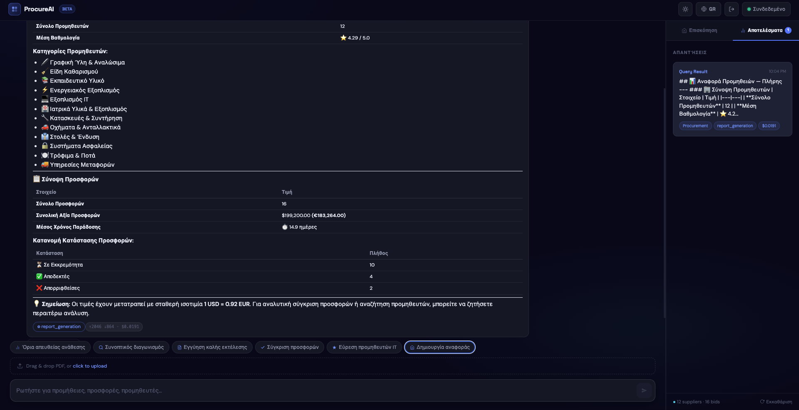

Το ProcureAI είναι ένας βοηθός για δημόσιες προμήθειες που λειτουργεί με ερωτήματα σε φυσική γλώσσα. Στον πυρήνα του λειτουργεί ένας ReAct agent (LangChain) με την Claude της Anthropic ως μοντέλο, και επιπλέον ένα RAG layer ώστε οι απαντήσεις να θεμελιώνονται σε πραγματικά έγγραφα (συμβάσεις, τιμοκαταλόγους, νομικά κείμενα) αντί να βασίζονται στη μνήμη του μοντέλου.
Η εφαρμογή σχεδιάστηκε με γνώμονα τον ελληνικό δημόσιο τομέα. Ο Ν.4412/2016 (Δημόσιες Συμβάσεις Έργων, Προμηθειών και Υπηρεσιών) λειτουργεί ως το νομικό υπόβαθρο που η εφαρμογή επικαλείται όταν χρειάζεται, και ολόκληρο το περιβάλλον λειτουργεί σε δύο γλώσσες, Ελληνικά και Αγγλικά.
Ο στόχος είναι απλός: ο χρήστης διατυπώνει το ερώτημά του με δικά του λόγια, και ο agent αποφασίζει μόνος του ποιο εργαλείο ταιριάζει. Δεν υπάρχει μενού με κουμπιά «τρέξε αυτή τη λειτουργία», η δρομολόγηση γίνεται από το μοντέλο. Τα τέσσερα εργαλεία είναι:
document_qa, ερωτήσεις επί μεταφορτωμένων PDF, με vector search στο ChromaDB και απαντήσεις που φέρουν τις πηγές τους.bid_comparison, κατάταξη προσφορών με κριτήρια τιμής, χρόνου παράδοσης και όρων πληρωμής· τα δεδομένα έρχονται από τη MongoDB (με προαιρετικό φίλτρο κατηγορίας) και η κατάταξη επιστρέφει από την Claude ως επικυρωμένο Pydantic σχήμα, που δηλώνει και πόσες προσφορές ταίριαξαν συνολικά όταν η λίστα είναι κομμένη.supplier_lookup, εύρεση και αξιολόγηση προμηθευτών, με φιλτράρισμα ανά κατηγορία ή βαθμολογία.report_generation, συγκεντρωτική εικόνα των προμηθειών: προμηθευτές, προσφορές, αξία, κατάσταση. Διαβάζει κάθε προσφορά, οπότε εκεί δρομολογούνται τα σύνολα, οι μέσοι όροι και τα πλήθη.Γύρω από αυτά υπάρχει ένα στρώμα ασφάλειας που δεν είναι διακοσμητικό: έλεγχος πρόσβασης με τρεις ρόλους και JWT, καταγραφή κάθε ενέργειας, απόκρυψη προσωπικών δεδομένων πριν το κείμενο σταλεί προς το μοντέλο, όρια ρυθμού ανά endpoint και παρακολούθηση σφαλμάτων με Sentry.
Η εφαρμογή γράφτηκε ως τελική εργασία του προγράμματος ΚΕΔΙΒΙΜ/ΟΠΑ «AI for Developers» (6 ECTS) και καλύπτει σχεδόν όλη την ύλη του: Python και FastAPI από την πρώτη ενότητα, prompt engineering από τη δεύτερη, αρχιτεκτονική AI συστημάτων από την τρίτη, RAG από την τέταρτη και agents με το ReAct pattern από την πέμπτη, με μερικά στοιχεία open-source μοντέλων από την έκτη. Η αναλυτική αντιστοίχιση ενοτήτων και τεχνικών βρίσκεται στον πίνακα του §7.10.
Η ανάπτυξη έγινε σε φάσεις. Η Phase 1 έθεσε τον πυρήνα (agent, RAG, βασικό UI). Η Phase 2, που ολοκληρώθηκε τον Αύγουστο του 2026, πρόσθεσε το στρώμα διακυβέρνησης: RBAC με JWT, multi-tenancy στο ChromaDB, audit log, versioning των prompts και structured outputs στο bid_comparison, μαζί με εκτενές refactoring σε backend και frontend.
Τρεις ρόλοι, με τον έλεγχο να γίνεται server-side μέσω Depends() στο FastAPI:
| Ρόλος | Ποιος είναι | Τι μπορεί να κάνει |
|---|---|---|
admin | Διαχειριστής | Τα πάντα: χρήστες, audit logs, prompts, chat, upload, δεδομένα |
procurement_officer | Υπεύθυνος προμηθειών | Chat με τον agent, ανέβασμα PDF, document Q&A, προβολή προμηθευτών και προσφορών |
viewer | Αναγνώστης | Μόνο ανάγνωση: προμηθευτές, προσφορές, αναφορές, συνομιλίες |
Document Q&A. Ένας procurement officer μεταφορτώνει το PDF του Ν.4412/2016 και θέτει το ερώτημα «ποια είναι τα βασικά άρθρα για τις δημόσιες συμβάσεις;». Ο agent επιλέγει μόνος του το document_qa, εκτελεί vector search στο ChromaDB και επιστρέφει απάντηση με τις πηγές. Όλο το σκεπτικό του (Thought, Action, Observation) φαίνεται στο UI αν ο χρήστης το ζητήσει.
Σύγκριση προσφορών. Στο «σύγκρινε τις διαθέσιμες προσφορές» ο agent περνά στο bid_comparison, που ανακτά τις προσφορές από τη MongoDB, τις δίνει στην Claude με with_structured_output(BidComparisonResult) και επιστρέφει κατάταξη κατά τιμή και χρόνο παράδοσης μαζί με σύσταση, ως JSON.
Αναζήτηση προμηθευτών. Στο «βρες προμηθευτές IT» καλείται το supplier_lookup, που φιλτράρει με regex στην κατηγορία και επιστρέφει αποτελέσματα ταξινομημένα κατά βαθμολογία.
Αναφορά. Στο «φτιάξε μου αναφορά προμηθειών» το report_generation συγκεντρώνει προμηθευτές και προσφορές και παράγει μια δομημένη σύνοψη.
Τι κάνει η εφαρμογή και πόσο κρίσιμο είναι το καθένα:
| Λειτουργία | Τι κάνει | Προτεραιότητα |
|---|---|---|
| Ανέβασμα εγγράφων | Ο χρήστης μεταφορτώνει ένα PDF με μεταφορά (drag-and-drop)· το κείμενο εξάγεται με pypdf, διασπάται σε chunks των 500 χαρακτήρων με 50 overlap ώστε να μη χάνεται το νόημα στα όρια, και κάθε chunk λαμβάνει embedding και αποθηκεύεται στο ChromaDB ως vector. | Υψηλή |
| Δρομολόγηση μέσω agent | Δεν υπάρχει σταθερό μενού με κουμπιά. Ο ReAct agent διαβάζει το ερώτημα και αποφασίζει μόνος του ποιο από τα τέσσερα tools ταιριάζει, μέσα σε βρόχο Thought → Action → Observation και μέχρι πέντε επαναλήψεις. Όλο το σκεπτικό παραμένει ορατό. | Υψηλή |
| Document Q&A (RAG) | Το ερώτημα γίνεται vector, το ChromaDB ανακτά τα πιο σχετικά chunks, κι αυτά προωθούνται στην Claude μαζί με την ερώτηση. Η απάντηση επιστρέφεται πάντα με τις πηγές της (ποιο έγγραφο και ποιο σημείο) ώστε να ελέγχεται. | Υψηλή |
| Σύγκριση προσφορών | Τραβάει τις προσφορές από τη MongoDB και τις βάζει σε σειρά κατά τιμή και χρόνο παράδοσης. Δίπλα σε κάθε μία φαίνονται οι όροι πληρωμής, η κατάσταση και η τιμή σε EUR· η κατάταξη και η σύσταση επιστρέφουν από την Claude ως δομημένο JSON (BidComparisonResult). Το tool βλέπει σελίδα δέκα προσφορών αλλά μετρά πόσες ταίριαξαν συνολικά, ώστε η απάντηση να λέει «10 από 16» και όχι «16»· αν το φίλτρο κατηγορίας δεν ταιριάξει σε τίποτα, επιστρέφει τις πραγματικές ετικέτες κατηγοριών για να ξαναδοκιμάσει ο agent. | Υψηλή |
| Αναζήτηση προμηθευτών | Φιλτράρει με regex στην κατηγορία (π.χ. «Εξοπλισμός IT») και επιστρέφει τους προμηθευτές ταξινομημένους κατά βαθμολογία, με κατηγορία, rating και στοιχεία επικοινωνίας, και προτείνει επόμενα ερωτήματα. Οι κατηγορίες είναι αποθηκευμένες με ελληνικές ετικέτες, οπότε ένα αγγλικό φίλτρο που δεν ταιριάζει παίρνει πίσω τη λίστα των υπαρκτών ετικετών αντί για ένα σκέτο «δεν βρέθηκε». | Υψηλή |
| Έλεγχος πρόσβασης | Login με JWT αποθηκευμένο σε httpOnly cookie. Κάθε endpoint ξέρει ποιοι ρόλοι το αγγίζουν· ένας viewer που επιχειρεί chat ή upload λαμβάνει 403, και η εγγραφή δέχεται μόνο ρόλο viewer. | Υψηλή |
| Απομόνωση δεδομένων ανά χρήστη | Κάθε request μεταφέρει το user_id μέσω ContextVar. Το where filter στο ChromaDB επιτρέπει στον χρήστη να βλέπει μόνο τα δικά του έγγραφα συν τα system, τον Ν.4412/2016 που έχει ανέβει κεντρικά. Οι διαγραφές κλειδώνουν ανά χρήστη και ανά source. | Υψηλή |
| Καταγραφή ενεργειών | Κάθε κλήση γράφεται στη MongoDB: ποιος, τι ρώτησε, πότε, με ποιες πηγές, από ποια IP. Γίνεται σε fire-and-forget task που δεν περιμένει, οπότε δεν προσθέτει καθυστέρηση στην απόκριση. | Μεσαία |
| Απόκρυψη προσωπικών δεδομένων | Πριν σταλεί οτιδήποτε προς το μοντέλο, ΑΦΜ, ΑΜΚΑ, email και ελληνικά τηλέφωνα εντοπίζονται με regex και αντικαθίστανται με placeholders όπως [AFM_REDACTED]. Στα logs μένει μόνο το πλήθος, ποτέ το περιεχόμενο. | Μεσαία |
| Δίγλωσσο περιβάλλον | Όλο το UI αλλάζει ανάμεσα σε Ελληνικά και Αγγλικά με ένα toggle, υπάρχει dark και light θέμα, και έξι έτοιμα ερωτήματα ανά γλώσσα που με ένα κλικ τροφοδοτούν κατευθείαν τον agent. | Μεσαία |
| Όρια ρυθμού | Throttling ανά IP με SlowAPI: 10 αιτήματα το λεπτό στο chat που είναι το ακριβό σημείο, 30 στα υπόλοιπα. Έτσι μια κατάχρηση ή ένα ελαττωματικό loop δεν θέτει την υπηρεσία εκτός λειτουργίας ούτε αυξάνει υπέρμετρα το κόστος. | Μεσαία |
| Βιβλιοθήκη prompts | Δύο use cases (chat, doc_qa) ζουν σε versioned αρχεία με YAML header. Ξαναφορτώνονται εν θερμώ πριν από κάθε κλήση και είναι όλα κάτω από Git, οπότε κάθε αλλαγή φαίνεται στο ιστορικό· το chat prompt έχει φτάσει στη v1.6 μέσα από διορθώσεις που προέκυψαν η καθεμία από συγκεκριμένη αποτυχία στο golden set (§7.3). | Μεσαία |
| Τεχνολογία | Ρόλος | Γιατί |
|---|---|---|
| Python 3.12 | Runtime | Εδώ ζει όλο το AI/ML οικοσύστημα· native async και type hints |
| FastAPI | Web framework | Async από τη βάση του, validation με Pydantic, αυτόματο Swagger/OpenAPI |
| LangChain | Agent + RAG | create_react_agent, AgentExecutor, PromptTemplate, text splitting |
| Anthropic Claude | LLM | claude-sonnet-4-6, reasoning, function calling, prompt caching |
| OpenAI Embeddings | Vectorization | text-embedding-3-small (1536 διαστάσεις) |
| ChromaDB | Vector store | Ελαφρύ, persistent, metadata filtering, multi-tenancy |
| MongoDB Atlas | Document DB | Προμηθευτές, προσφορές, χρήστες, audit logs, usage, συνομιλίες |
| Pydantic v2 | Validation | Type-safe μοντέλα, settings, JSON schema, structured outputs |
| Motor | Async Mongo driver | Μη μπλοκάρων I/O προς τη MongoDB, singleton client με lazy init |
| Sentry | Monitoring | Error tracking, performance, breadcrumbs, PII scrubbing |
| structlog | Logging | Δομημένα JSON logs με correlation IDs |
| SlowAPI | Rate limiting | Throttling ανά endpoint (IP-based) |
| passlib / bcrypt | Κωδικοί | Ασφαλές hashing· JWT μέσω python-jose |
| Τεχνολογία | Ρόλος | Γιατί |
|---|---|---|
| React 18 | UI | Component-based, hooks, τεράστιο οικοσύστημα |
| TypeScript | Τύποι | Ασφάλεια στο compile, κώδικας που εξηγεί τον εαυτό του |
| Vite | Build | Γρήγορο HMR, ESM-native |
| Tailwind CSS v4 | Styling | Utility-first μαζί με custom design tokens στο App.css |
| Context API | State | AuthContext για την ταυτότητα· η υπόλοιπη κατάσταση ζει σε custom hooks |
| Sentry (React) | Error boundary | Browser tracking, ErrorBoundary component |
| react-markdown | Rendering | Markdown και GFM tables στις απαντήσεις του agent |
| sonner | Toasts | Ειδοποιήσεις για uploads και σφάλματα |
Η αρχιτεκτονική του frontend δεν είναι μονολιθική: το App.tsx κρατά μόνο 86 γραμμές σύνθεσης, ενώ η λογική είναι κατανεμημένη σε components/, hooks/, api/, contexts/ και types/. Η πλήρης δομή παρουσιάζεται στο §6.1.
| Εργαλείο | Ρόλος |
|---|---|
| pytest + pytest-asyncio | 199 αυτοματοποιημένα tests, unit και integration, async, με mocked MongoDB fixture και mocked LLM για τον agent |
| pre-commit | trailing-whitespace, ruff, mypy, detect-secrets |
| GitHub Actions CI | Lint, test, type-check σε κάθε push και PR |
| ruff | Linting και formatting (αντικαθιστά flake8/black) |
| mypy | Static type checking |
| detect-secrets | Σάρωση για secrets (.secrets.baseline) |
| Docker + docker compose | backend + frontend + MongoDB σε containers |
Χρόνος εκκίνησης. Οι lazy-loaded clients (Mongo, Chroma, LLM) και η μεταφορά των προαιρετικών εξαρτήσεων του reranker σε ξεχωριστό requirements-rerank.txt μείωσαν τον χρόνο import από 7.00s σε 1.59s, δηλαδή κατά 77%.
Μετά από ένα εκτενές refactoring τον Αύγουστο του 2026, το main.py κρατά 135 γραμμές (lifespan, middleware wiring, router registration, Sentry init) και όλα τα υπόλοιπα σπάνε σε πακέτα με σαφή ευθύνη το καθένα (layered architecture):
| Πακέτο | Modules | Τι κάνει |
|---|---|---|
agent/ | executor.py · prompt.py · tools.py | Ο ReAct agent: AgentExecutor, τα 4 tools, φόρτωση prompt |
api/routes/ | auth.py | Auth router (login, register, logout, me) |
auth/ | security.py · dependencies.py | JWT, password hashing, get_current_user |
core/ | audit · chroma_tenant · prompt_loader · rbac · sentry | Audit, multi-tenancy, PromptLoader singleton, RBAC, Sentry init |
crud/ | user.py | MongoDB CRUD: create, authenticate, update |
data/ | seed.py · pdfs/ | Idempotent seeding: 12 προμηθευτές, 16 προσφορές· --force αδειάζει τις δύο συλλογές πριν ξαναγεμίσουν, ώστε μια αλλαγή σχήματος (π.χ. το πεδίο category) να μην αφήνει παλιά έγγραφα πίσω. Στο pdfs/ τα δείγματα συμβάσεων, τιμοκαταλόγων και τα αποσπάσματα του Ν.4412/2016 |
llm/ | clients · pricing · callbacks | Lazy LLM clients, υπολογισμός κόστους, LangChain callback |
middleware/ | cors · correlation · rate_limit · audit_middleware | CORS, X-Correlation-ID, SlowAPI, fire-and-forget audit |
models/ | supplier · bid · user | Pydantic v2 μοντέλα Supplier, Bid (με πεδίο category για φιλτράρισμα ανά κατηγορία) και User |
rag/ | vectorstore · embeddings · chunking · ingest · reranker | ChromaDB, OpenAI embeddings, text splitting, ingestion PDF, CrossEncoder |
routers/ | chat · suppliers · reports · health · admin | REST endpoints, κλήση agent, file upload |
schemas/ | auth · bid_comparison · chat · user | Pydantic request/response μοντέλα και το σχήμα structured output του bid_comparison |
security/ | pii.py | Απόκρυψη ΑΦΜ, ΑΜΚΑ, email, τηλεφώνων |
utils/ | lazy.py | LazyProxy: αναβολή αρχικοποίησης Mongo/Chroma/LLM clients μέχρι την πρώτη χρήση |
tests/ | test_auth · test_rbac · test_agent · test_tools · test_seed · test_chunking · test_ingest · test_env_isolation κ.ά. | 199 tests, unit και integration, με in-memory fake MongoDB fixture· το test_agent.py (15 tests, mocked LLM) καλύπτει τον βρόχο run_agent, το trace, το max_iterations, τα σφάλματα tools, το PII redaction, τις διαδρομές του document_qa και τους κανόνες του chat prompt (γλώσσα, νόμισμα ανά πηγή, δρομολόγηση των aggregates) μαζί με τα docstrings των tools που τους συνοδεύουν· το test_tools.py (18 tests) ελέγχει το clamp του document_qa, τις ετικέτες «10 από 16», τα hints κατηγορίας και ότι ο μέσος όρος του report_generation καλύπτει και τις 16 προσφορές |
prompts/ | chat/v1.txt · doc_qa/v1.txt | 2 versioned αρχεία prompt (YAML header + κείμενο)· το chat βρίσκεται στην έκδοση v1.6, με changelog v1.1–v1.6 μέσα στο header |
Το διάγραμμα αποτυπώνει τη διαδρομή ενός αιτήματος από πάνω προς τα κάτω: από το React UI, μέσα από τη σειρά ελέγχων του FastAPI, στον ReAct agent που επιλέγει εργαλείο, και από εκεί στα δύο data stores. Στο κάτω μέρος αποδίδονται το RAG pipeline και τα οριζόντια θέματα (logging, ασφάλεια, κόστος) που αφορούν κάθε request.
Η δρομολόγηση όλου του συστήματος βασίζεται σε έναν LangChain ReAct agent (create_react_agent + AgentExecutor). Ο χρήστης στέλνει ελεύθερο κείμενο και ο agent εισέρχεται σε έναν βρόχο σκέψης (Thought, Action, Observation) επιλέγοντας μόνος του ποιο tool θα καλέσει, μέχρι πέντε επαναλήψεις. Τα ενδιάμεσα βήματα κρατιούνται και εμφανίζονται στο frontend.
Το system prompt (prompts/chat/v1.txt) δίνει στον agent τους κανόνες επιλογής εργαλείου, τη θωράκιση απέναντι σε prompt injection, τους κανόνες νομίσματος (οι τιμές της βάσης σε EUR, τα ποσά που παρατίθενται από έγγραφα στο νόμισμα που δηλώνει το έγγραφο, §7.3) και τον κανόνα να απαντά στη γλώσσα του μηνύματος του χρήστη. Το αρχείο φέρει στο YAML header του την τρέχουσα έκδοση, v1.6.
Οι κανόνες επιλογής εργαλείου διαχωρίζουν πλέον τα ερωτήματα για τις προσφορές με βάση το τι χρειάζεται η απάντηση και όχι την έκτασή τους. Σύνολα, μέσοι όροι, πλήθη και κατανομές κατάστασης πάνω σε όλες τις προσφορές πηγαίνουν στο report_generation, που διαβάζει κάθε προσφορά και επιστρέφει έναν αριθμό· κατάταξη, σύγκριση, λίστα ή φιλτράρισμα μένουν στο bid_comparison, ακόμη κι όταν αφορούν όλες τις προσφορές, γιατί επιστρέφει τις μεμονωμένες προσφορές ως λίστα. Η διάκριση έχει σημασία επειδή το bid_comparison βλέπει σελίδα δέκα προσφορών ενώ η βάση έχει δεκαέξι: ένα άθροισμα ή ένας μέσος όρος πάνω σε αυτή τη σελίδα είναι λάθος νούμερο που μοιάζει σωστό.
TOOL SELECTION RULES. Σε πρώιμη έκδοση ο agent απαντούσε σε νομικά ερωτήματα («ποια είναι τα όρια απευθείας ανάθεσης;») από τη δική του μνήμη, παρακάμπτοντας εντελώς το RAG. Το πρόβλημα δεν ήταν στα tools αλλά στο prompt: δεν υπήρχε ρητός κανόνας που να δεσμεύει τα νομικά ερωτήματα στο document_qa. Προστέθηκε ενότητα TOOL SELECTION RULES στο prompts/chat/v1.txt που ορίζει ότι κάθε ερώτημα σχετικό με άρθρα, κατώφλια, όρια ή διατάξεις του Ν.4412/2016 δρομολογείται υποχρεωτικά στο document_qa πριν συντεθεί οποιαδήποτε απάντηση. Το περιστατικό δείχνει πρακτικά γιατί τα prompts πρέπει να είναι versioned και κάτω από Git.
Στο ανέβασμα, το PDF περνά από εξαγωγή κειμένου με pypdf, διασπάται σε chunks των 500 χαρακτήρων με overlap 50 χαρακτήρων (οι τελευταίοι 50 χαρακτήρες κάθε chunk επαναλαμβάνονται στην αρχή του επόμενου, με ανώτατο όριο το μισό του chunk_size, και η διάσπαση σέβεται τα όρια παραγράφων και γραμμών), κάθε chunk λαμβάνει embedding από το OpenAI και αποθηκεύεται στο ChromaDB μαζί με metadata (user_id, source, chunk).
Στην ανάκτηση, το ερώτημα γίνεται κι αυτό vector, το ChromaDB ανακτά τα πιο κοντινά chunks (top-4 κανονικά, top-20 αν είναι ενεργός ο reranker, με το αίτημα να περιορίζεται στο πλήθος των αποθηκευμένων chunks, γιατί το Chroma ρίχνει σφάλμα όταν του ζητηθούν περισσότερα από όσα έχει και μια μικρή συλλογή φαινόταν κενή) και ένας CrossEncoder (ms-marco-MiniLM) διατηρεί τα 5 καλύτερα. Αυτά μαζί με την ερώτηση προωθούνται στην Claude μέσω του messages API, με prompt caching, και επιστρέφεται η απάντηση με τις πηγές της.
Η διαδρομή κάθε request είναι σταθερή: HTTP → CORS → rate limit → correlation ID → έλεγχος JWT (get_current_user) → έλεγχος ρόλου (require_admin / require_procurement_officer / require_viewer) → handler → fire-and-forget audit_interaction() → απόκριση.
Κάθε εγγραφή audit καταγράφει user_id, ρόλο, ενέργεια, τους πρώτους 500 χαρακτήρες του ερωτήματος και της απάντησης, τις πηγές, το endpoint, την IP και τη χρονοσφραγίδα. Όλα αποθηκεύονται σε MongoDB collection με compound index στα (user_id, timestamp).
Η πλήρης αλληλουχία ενός αιτήματος προς το /chat: από το React UI, μέσα από τους ελέγχους του FastAPI, στον agent που εκτελεί τον βρόχο ReAct και καλεί tools, και πίσω, με το audit να γράφεται ασύγχρονα εκτός της κρίσιμης διαδρομής.
Πώς ταξιδεύει η ταυτότητα του χρήστη: από το login και την έκδοση JWT, στο httpOnly cookie, και στον έλεγχο ρόλου με Depends() πριν φτάσει το αίτημα στον handler.
Όλα τα endpoints του FastAPI. Διαδραστικά docs υπάρχουν στο /docs (Swagger UI) και στο /redoc.
| Method | Endpoint | Περιγραφή | Auth |
|---|---|---|---|
| POST | /auth/register | Εγγραφή, δέχεται μόνο ρόλο viewer, αλλιώς 422 | Public |
| POST | /auth/login | Login → JWT σε httpOnly cookie | Public |
| POST | /auth/logout | Καθαρισμός cookie | Public |
| GET | /auth/me | Στοιχεία τρέχοντος χρήστη | JWT |
| Method | Endpoint | Περιγραφή | Auth / Rate |
|---|---|---|---|
| POST | /chat | Ερώτημα στον agent → απάντηση, tool, trace, usage | officer+ · 10/min |
| POST | /upload | PDF → chunking → ChromaDB | officer+ · 30/min |
| POST | /doc_qa | Απευθείας document_qa, παρακάμπτει τον agent | officer+ · 30/min |
| DELETE | /documents?source=X | Διαγραφή των chunks ενός εγγράφου του χρήστη | officer+ · 30/min |
| GET | /conversations/{id}/trace | Το reasoning trace μιας συνομιλίας | viewer+ |
| Method | Endpoint | Περιγραφή | Auth / Rate |
|---|---|---|---|
| GET | /suppliers | Όλοι οι προμηθευτές (MongoDB) | viewer+ · 30/min |
| GET | /bids | Όλες οι προσφορές (MongoDB) | viewer+ · 30/min |
| Method | Endpoint | Περιγραφή | Auth |
|---|---|---|---|
| GET | /admin/audit-logs | Audit trail με σελιδοποίηση (φίλτρα user_id, action) | admin |
| GET | /admin/prompts | Λίστα use cases, εκδόσεις και metadata | admin |
| GET | /admin/prompts/{uc}/{v} | Το κείμενο ενός συγκεκριμένου prompt | admin |
| Method | Endpoint | Περιγραφή | Auth |
|---|---|---|---|
| GET | / | Health check → {"message": "ProcureAI API ready", "version": "4.0.0"} | Public |
Το frontend είναι ένα SPA σε React 18 και TypeScript, με custom design tokens στο App.css και layout δύο πάνελ. Στο αριστερό πάνελ βρίσκεται η συνομιλία, στο δεξί ένας live data inspector.
Στην πρώτη έκδοση όλη η εφαρμογή ζούσε σε ένα App.tsx 868 γραμμών. Αυτό είναι το κλασικό αντι-πρότυπο του React: κάθε αλλαγή αγγίζει το ίδιο αρχείο, τίποτα δεν ξαναχρησιμοποιείται, και το testing γίνεται πρακτικά αδύνατο. Το refactoring το έσπασε σε πέντε επίπεδα με σαφή ευθύνη, αφήνοντας το App.tsx στις 86 γραμμές, όσες χρειάζονται μόνο για τη σύνθεση:
| Φάκελος | Αρχεία | Ευθύνη |
|---|---|---|
components/chat/ | ChatPanel · MessageList · MessageBubble · SuggestionChips · TracePanel · UploadZone · UsageBadge | Ολόκληρη η συνομιλία: φυσαλίδες μηνυμάτων, chips, reasoning trace, drag-and-drop, badge κόστους |
components/inspector/ | DataInspector · DataInspectorTabs · SupplierCard · BidCard | Το δεξί πάνελ: tabs, κάρτες προμηθευτών και προσφορών |
components/layout/ | Header · LanguageToggle · ThemeToggle | Κεφαλίδα και οι δύο διακόπτες (γλώσσα, θέμα) |
components/common/ | Icon · ErrorFallback | Εικονίδια SVG και το UI του Sentry ErrorBoundary |
hooks/ | useChat · useCatalogData · useInspectorData · useI18n · useTheme | Όλη η κατάσταση και οι παρενέργειες. Τα components μένουν σχεδόν καθαρά presentational |
api/ | auth.ts · chat.ts | Typed HTTP client, ένα σημείο για base URL, credentials και χειρισμό σφαλμάτων |
contexts/ | AuthContext.tsx | Ταυτότητα χρήστη και ρόλος, διαθέσιμα σε όλο το δέντρο |
types/ | index.ts | Κοινά interfaces (Message, Supplier, Bid, TraceStep, Usage) μοιρασμένα σε components, hooks και api |
i18n/ | translations.ts | Το TRANSLATIONS object, GR και EN |
pages/ | LoginPage.tsx | Οθόνη login και εγγραφής |
lib/ | sentry.ts | Αρχικοποίηση Sentry για τον browser |
Το όφελος δεν είναι αισθητικό. Ένα νέο tool στον agent σημαίνει πλέον ένα νέο badge στο MessageBubble και τίποτε άλλο· μια αλλαγή στο endpoint του chat αγγίζει μόνο το api/chat.ts· και η λογική του useChat μπορεί να δοκιμαστεί χωρίς να στηθεί ολόκληρο το δέντρο των components.
Message bubbles με rendering Markdown/GFM, η κινούμενη ένδειξη πληκτρολόγησης, ένα badge που δείχνει ποιο tool χρησιμοποιήθηκε, ένα δεύτερο badge με tokens και κόστος, το αναδιπλούμενο panel με το reasoning trace, τα suggestion chips και η ζώνη όπου ο χρήστης μεταφέρει PDF για μεταφόρτωση.
Δύο tabs. Στο πρώτο, κάρτες προμηθευτών και προσφορών που ανακτώνται live από τη MongoDB μέσω του useInspectorData. Στο δεύτερο, οι απαντήσεις του agent με το tool που κλήθηκε και το κόστος της κλήσης.
Πλήρες i18n μέσω ενός TRANSLATIONS object και του hook useI18n, με toggle GR/EN και προεπιλογή τα Αγγλικά (αποθηκεύεται στο localStorage). Έξι suggestion chips ανά γλώσσα· τα ελληνικά είναι: όρια απευθείας ανάθεσης, συνοπτικός διαγωνισμός, εγγύηση καλής εκτέλεσης, σύγκριση προσφορών, εύρεση προμηθευτών IT, δημιουργία αναφοράς.
Με CSS custom properties (--bg, --surface, --accent κ.λπ.) και ένα .light override, ελεγχόμενα από το useTheme. Ο διακόπτης είναι στο header, η προτίμηση μένει στο localStorage, και το φόντο έχει διακριτικά ambient gradients.
Ο έλεγχος γίνεται server-side με JWT και RBAC. Ένας viewer που επιχειρεί POST στο /chat ή στο /upload λαμβάνει 403. Το authentication περνά από httpOnly cookie, με σελίδα login/register (pages/LoginPage.tsx) και το AuthContext να κρατά την τρέχουσα ταυτότητα.
Ένα media query στα 768px αναδιατάσσει τα πάντα σε μία στήλη: το chat καταλαμβάνει όλο το πλάτος, το δεξί πάνελ μεταφέρεται από κάτω με max-height 280px, τα chips κυλούν οριζόντια και το header συμπτύσσεται κρύβοντας τις ετικέτες. Η λειτουργικότητα μένει η ίδια, αλλάζει μόνο η διάταξη.
Εδώ συγκεντρώνονται οι τεχνικές από τις ενότητες 2 έως 5 του προγράμματος: prompt engineering, αρχιτεκτονική, RAG και agents. Ο συγκεντρωτικός πίνακας αντιστοίχισης βρίσκεται στο §7.10.
Ο agent τρέχει με create_react_agent + AgentExecutor και return_intermediate_steps=True. Τα τέσσερα tools είναι decorated με @tool: το document_qa (sync, ChromaDB + Claude), το bid_comparison (async, MongoDB + Claude με structured output, §7.4) και τα supplier_lookup, report_generation (async, μόνο MongoDB, χωρίς κλήση LLM). Όριο πέντε επαναλήψεων, με handle_parsing_errors=True.
Το trace (Thought → Action → Action Input → Observation) καταγράφεται, αποθηκεύεται στη MongoDB και εμφανίζεται στο frontend σε αναδιπλούμενο panel. Κάθε κλήση μετράει tokens και κόστος μέσω ενός custom UsageCallback και ενός _UsageAccum ContextVar.
Το splitting γίνεται με custom split_text_chunks: chunks των 500 χαρακτήρων που σέβονται τα όρια παραγράφων και γραμμών, με πραγματικό overlap 50 χαρακτήρων (η ουρά του προηγούμενου chunk μπαίνει στην αρχή του επόμενου· το overlap περιορίζεται σε chunk_size // 2 ώστε τουλάχιστον το μισό κάθε chunk να είναι νέο περιεχόμενο). Τα embeddings είναι OpenAI text-embedding-3-small (1536 διαστάσεις), με lazy-loaded client (LazyProxy). Το vector store είναι persistent ChromaDB, collection procureai_documents, με metadata user_id, source και chunk index.
Στην ανάκτηση: similarity search (top-4 κανονικά, top-20 με reranker, ποτέ περισσότερα από τα chunks που υπάρχουν στη συλλογή) και where filter {$or: [{user_id}, {user_id: 'system'}]}. Ο προαιρετικός CrossEncoder (ms-marco-MiniLM-L-6-v2) ξανακατατάσσει στα top-5 αν το USE_RERANKER είναι true. Η generation γίνεται με το raw messages API της Anthropic και prompt caching (ephemeral) στο system prompt και το context.
Ένα PromptLoader singleton φορτώνει τα prompts από τον δίσκο (prompts/{use_case}/v1.txt). Κάθε αρχείο έχει YAML header (use_case, version, created, description), έναν διαχωριστή --- και μετά το κείμενο. Δύο use cases: chat (το ReAct template, σήμερα στην έκδοση v1.6) και doc_qa. Πριν από κάθε κλήση του agent τρέχει prompt_loader.reload() για hot-reload, και τα prompts είναι όλα κάτω από Git.
Το πρακτικό όφελος φάνηκε στη διόρθωση της δρομολόγησης των νομικών ερωτημάτων (§4.3): η αλλαγή ήταν ένα κείμενο, όχι κώδικας, εφαρμόστηκε χωρίς redeploy και το ιστορικό της είναι ορατό στο git log. Οι επόμενες εκδόσεις του chat prompt δείχνουν την ίδια ροή στην πράξη ως πλήρη αλυσίδα: κάθε έκδοση από τη v1.3 και μετά προήλθε από συγκεκριμένη αποτυχία σε γύρο του golden set (§7.9), διορθώθηκε με αλλαγή στο κείμενο του prompt, κατοχυρώθηκε με offline test που ελέγχει ότι ο κανόνας υπάρχει στο prompt που φορτώνει ο executor, και επαληθεύτηκε με νέο γύρο αξιολόγησης. Το header του αρχείου κρατά μία γραμμή changelog ανά έκδοση.
| Έκδοση | Αφορμή | Αλλαγή |
|---|---|---|
| v1.1 | Νομικά ερωτήματα απαντιούνταν από τη μνήμη του μοντέλου, χωρίς RAG (§4.3) | Προστέθηκαν τα TOOL SELECTION RULES: κάθε ερώτημα για τον Ν.4412/2016 περνά υποχρεωτικά από το document_qa |
| v1.2 | Οι τιμές έγιναν EUR από άκρη σε άκρη (MongoDB, tools, UI) | Αφαιρέθηκε ο κανόνας μετατροπής USD→EUR· «όλες οι τιμές είναι σε EUR» |
| v1.3 | Γύρος 1 (2026-09-12): 3/18. Ο κανόνας γλώσσας κάλυπτε μόνο ελληνική είσοδο, οπότε τα αγγλικά ερωτήματα απαντιούνταν στα ελληνικά και το harness δεν έβρισκε τα αγγλικά keywords | «Always respond in the language of the user's message»· γύρος 2: 17/18 |
| v1.4 | Γύροι 1 και 2: το q18 («total value of all bids») πήγαινε στο bid_comparison, που βλέπει σελίδα δέκα προσφορών, αντί για το report_generation | Νέος κανόνας: σύνολα, σύνοψεις και «all bids» δρομολογούνται στο report_generation |
| v1.5 | Γύρος 3 (2026-09-12c): 15/18. Δύο προβλήματα. (α) Η διατύπωση «all bids» της v1.4 τράβηξε και τα q12 («average delivery time across all bids») και q13 («show accepted bids») στο report_generation. (β) Στο q01 το document_qa επέστρεψε «$875,500.00 USD» και «$2,450,000.00 USD» από τα contract_techsupply.pdf και contract_buildpro.pdf, και η τελική απάντηση τα παρουσίασε ως «€875,500.00» και «€2,450,000.00», ίδιοι αριθμοί με αλλαγμένο σύμβολο, επειδή ο κανόνας της v1.2 έλεγε ότι όλες οι τιμές είναι EUR. Το harness το πέρασε, γιατί τα keywords ήταν εκεί | Ο κανόνας δρομολόγησης στενεύει: σύνολα, πλήθη και κατανομές κατάστασης στο report_generation, κατάταξη/σύγκριση/λίστα/φιλτράρισμα στο bid_comparison ακόμη κι αν αφορούν όλες τις προσφορές. Ο κανόνας νομίσματος χωρίζεται ανά πηγή: τιμές της βάσης σε EUR, ποσά από έγγραφα στο νόμισμα του εγγράφου, χωρίς μετατροπή ή αλλαγή συμβόλου, με αναφορά στο έγγραφο-πηγή. Γύρος 4: 18/18 |
| v1.6 | Γύρος 4 (2026-09-12d): 18/18, αλλά το q12 «πέρασε» με λάθος νούμερο. Η v1.5 ανέφερε το «delivery times across all bids» ως παράδειγμα bid_comparison, οπότε ο μέσος χρόνος παράδοσης υπολογίστηκε πάνω στις 10 από τις 16 προσφορές που επιστρέφει το tool | Οι μέσοι όροι είναι κι αυτοί aggregates: «average delivery time across all bids» και «μέσος χρόνος παράδοσης» πηγαίνουν στο report_generation, που διαβάζει κάθε προσφορά. Το golden set αλλάζει το αναμενόμενο tool του q12 αντίστοιχα. Γύρος 5: 18/18, με τον μέσο όρο πάνω και στις 16 προσφορές |
Η αλυσίδα δείχνει και το όριο της μεθόδου: οι δύο αποτυχίες που οδήγησαν στη v1.5(β) και στη v1.6 δεν φάνηκαν ως αποτυχίες στο harness, γιατί αυτό ελέγχει keywords και επιλογή tool, όχι αν ένα ποσό φέρει το σωστό νόμισμα ή αν ένας μέσος όρος καλύπτει όλα τα δεδομένα. Εντοπίστηκαν διαβάζοντας τις απαντήσεις στα αποθηκευμένα αποτελέσματα. Ο διαχωρισμός του νομίσματος ανά πηγή είναι ρεαλιστική απαίτηση για φορέα του ελληνικού δημοσίου: συμβάσεις με ξένους προμηθευτές και τεχνικές προσφορές συχνά αναγράφουν ποσά σε USD ή άλλο νόμισμα, και μια αλλαγή συμβόλου δεν είναι επιλογή μορφοποίησης αλλά λάθος ποσό.
Το bid_comparison είναι το σημείο όπου το μοντέλο δεν επιστρέφει πεζό κείμενο αλλά επικυρωμένο σχήμα. Το tool μετρά πρώτα πόσες προσφορές ταιριάζουν στο φίλτρο (count_documents, προαιρετικά με regex στο πεδίο category), ανακτά έως δέκα από αυτές, τις σειριοποιεί σε JSON και καλεί claude_llm.with_structured_output(BidComparisonResult), λέγοντας στο μοντέλο ρητά «10 of 16 matching bids are listed». Η Claude κατατάσσει τις προσφορές σταθμίζοντας τιμή και χρόνο παράδοσης και συνιστά μία· το αποτέλεσμα επικυρώνεται από την Pydantic v2, τα πεδία total_matched και truncated ξαναγράφονται από τα νούμερα της MongoDB ώστε το JSON να μην εξαρτάται από ό,τι επανέλαβε το μοντέλο, και η observation επιστρέφει στον ReAct βρόχο σε μορφή JSON (model_dump_json), ώστε ο agent να συνθέτει την τελική απάντηση από σταθερά πεδία και όχι από ελεύθερο κείμενο. Αν η δομημένη κλήση αποτύχει για οποιονδήποτε λόγο, το tool καταγράφει προειδοποίηση και επιστρέφει την ίδια λίστα σε απλό κείμενο με την ίδια επικεφαλίδα «showing 10 of 16», οπότε ο χρήστης παίρνει πάντα απάντηση. Αν το φίλτρο κατηγορίας δεν ταιριάξει σε καμία προσφορά, η observation απαριθμεί τις υπαρκτές ετικέτες κατηγοριών της βάσης: στον γύρο 3 της αξιολόγησης το q07 («bids for medical equipment») εξάντλησε και τις πέντε επαναλήψεις μαντεύοντας αγγλικά συνώνυμα για την ετικέτα «Ιατρικά Υλικά & Εξοπλισμός»· με το hint το trace γίνεται μία αστοχία, μία επανάληψη με τη σωστή ετικέτα και μια πραγματική απάντηση.
| Μοντέλο | Βασικά πεδία | Ρόλος |
|---|---|---|
| RankedBid | supplier_id, total_price_eur, delivery_days, status | Μία προσφορά όπως την κατέταξε το μοντέλο |
| BidComparisonResult | bids (List[RankedBid]), recommendation, total_matched, truncated | Η κατάταξη best-value first, η σύσταση ανάθεσης σε δύο-τρεις προτάσεις, πόσες προσφορές ταίριαξαν συνολικά στη βάση και αν η λίστα είναι δείγμα τους |
Η απομόνωση γίνεται με ένα ContextVar στο core/chroma_tenant.py: κάθε request θέτει το _current_user_id. Το document_qa εφαρμόζει where={$or: [get_user_filter(user_id), {user_id: 'system'}]}, ώστε ο χρήστης να βλέπει και τα δικά του έγγραφα και τα system έγγραφα (τον Ν.4412/2016 που έχει ανέβει κεντρικά). Οι διαγραφές φιλτράρουν αυστηρά ανά χρήστη και ανά source.
Το pattern είναι fire-and-forget: το audit_interaction() εκκινεί ένα asyncio.create_task(log_audit(...)) χωρίς να αναμένει. Μηδενικό κόστος στη διαδρομή της απόκρισης, και το log_audit καταπίνει τυχόν exceptions ώστε να μην προκαλεί ποτέ σφάλμα στον caller. Όλα αποθηκεύονται σε MongoDB collection με compound index [user_id, timestamp DESC].
Πριν από κάθε κλήση του agent, το input του χρήστη περνά από το security/pii.py:redact_pii(). Με regex εντοπίζονται ΑΦΜ (9 ψηφία), ΑΜΚΑ (11 ψηφία), email (RFC 5322) και ελληνικά τηλέφωνα, και αντικαθίστανται με [AFM_REDACTED], [AMKA_REDACTED] κ.ο.κ. Καταγράφεται μόνο το πλήθος, ποτέ το περιεχόμενο.
Το document_qa στέλνει το system prompt και τα context chunks με cache_control: {type: 'ephemeral'}. Σε επαναλαμβανόμενα ερωτήματα αυτό μειώνει αισθητά το κόστος, το cache read κοστίζει $0.30/MTok έναντι $3.75 για το write και $3.00 για κανονικό input. Το usage tracking μετράει χωριστά cache_creation και cache_read tokens μέσω του _UsageAccum.
Το golden set (evals/golden_set.json, 18 ερωτήματα εκ των οποίων 3 injection tests) τρέχει με το evals/run_evals.py απέναντι σε ζωντανό backend, και η πλήρης έξοδος ανά ερώτημα αποθηκεύεται στο evals/results/. Πέντε καταγεγραμμένοι γύροι, όλοι με claude-sonnet-4-6 και τοπική MongoDB με τα seeded δεδομένα (12 προμηθευτές, 16 προσφορές)· οι δύο πρώτοι με τοπικό ChromaDB 8 chunks, οι επόμενοι με τα δείγματα PDF του backend/data/pdfs/ περασμένα από το scripts/ingest_pdfs.py:
| Run | Ημερομηνία | Prompt | Pass rate | Tool routing | Injection refusals | Μέση latency | Μέσο κόστος |
|---|---|---|---|---|---|---|---|
| 1 | 2026-09-12 | chat v1.2 | 3 / 18 (16.7%) | 14 / 15 | 0 / 3 | 16.7 s | $0.021 |
| 2 | 2026-09-12 | chat v1.3 | 17 / 18 (94.4%) | 14 / 15 | 3 / 3 | 15.6 s | $0.021 |
| 3 | 2026-09-12 | chat v1.4 | 15 / 18 (83.3%) | 13 / 15 | 3 / 3 | 12.6 s | $0.018 |
| 4 | 2026-09-13 | chat v1.5 | 18 / 18 (100%) | 15 / 15 | 3 / 3 | 13.3 s | $0.021 |
| 5 | 2026-09-13 | chat v1.6 | 18 / 18 (100%) | 15 / 15 | 3 / 3 | 11.9 s | $0.020 |
Ο πρώτος γύρος απέτυχε στη γλώσσα, όχι στη συμπεριφορά: ο κανόνας της v1.2 κάλυπτε μόνο την ελληνική είσοδο, οπότε τα αγγλικά ερωτήματα απαντιούνταν στα ελληνικά, ενώ το harness ελέγχει αγγλικά keywords και αγγλικές φράσεις άρνησης (και τα τρία injection tests απορρίφθηκαν, αλλά στα ελληνικά). Η v1.3 αντικατέστησε τον κανόνα με «always respond in the language of the user's message», που είναι και η μόνη διαφορά ανάμεσα στους δύο πρώτους γύρους, και ο δεύτερος πέρασε 17 από τα 18. Η αποτυχία που απέμεινε ήταν το q18 («What is the total value of all bids in the system?»), που δρομολογήθηκε στο bid_comparison αντί για το report_generation, όπως και στον πρώτο γύρο.
Ο τρίτος γύρος, με τη v1.4, διόρθωσε το q18 αλλά έφερε το ποσοστό στα 15/18. Η διατύπωση «all bids» του νέου κανόνα τράβηξε τα q12 («average delivery time across all bids») και q13 («show accepted bids») στο report_generation, ενώ το q07 («bids for medical equipment») απέτυχε στα keywords επειδή ο agent εξάντλησε τις πέντε επαναλήψεις μαντεύοντας αγγλικές κατηγορίες πάνω σε ελληνικές ετικέτες (§7.4)· η δρομολόγηση εκεί ήταν σωστή, γι' αυτό το routing μετρά 13/15 και όχι 12/15. Ο ίδιος γύρος ανέδειξε και το πρόβλημα του νομίσματος: το q01 πέρασε, αλλά η απάντηση παρουσίαζε τα «$875,500.00 USD» και «$2,450,000.00 USD» των δύο συμβάσεων ως ευρώ. Οι διορθώσεις ήταν τρεις, δύο στο prompt (v1.5: στενότερος κανόνας δρομολόγησης, νόμισμα ανά πηγή) και μία στον κώδικα (το hint με τις υπαρκτές κατηγορίες), και ο τέταρτος γύρος πέρασε 18/18.
Το 18/18 του τέταρτου γύρου όμως έκρυβε ένα λάθος νούμερο: το q12 πήγε στο bid_comparison, όπως περίμενε τότε το golden set, και ο «μέσος χρόνος παράδοσης σε όλες τις προσφορές» υπολογίστηκε πάνω στις 10 από τις 16 που επιστρέφει το tool. Η v1.6 έβαλε και τους μέσους όρους στα aggregates, το golden set άλλαξε το αναμενόμενο tool του q12 σε report_generation (τα keywords «delivery», «days» έμειναν ίδια, αφού η αναφορά τυπώνει «Average Delivery Time: N.N days»), και ο πέμπτος γύρος πέρασε 18/18 με τον μέσο όρο πάνω σε όλες τις προσφορές, ενώ τα q13 και q18 έμειναν στα tools τους, δηλαδή το στένεμα του κανόνα γύρω από τους μέσους όρους δεν ξανάνοιξε το λάθος της v1.4. Το tool routing μετρά τα 15 μη-injection ερωτήματα, αφού οι αρνήσεις δεν δρομολογούνται σε κανένα tool. Πρέπει να είναι σαφές τι μετρά το golden set: παρουσία keywords και σωστή επιλογή tool, όχι ποιότητα απάντησης· μια απάντηση «δεν βρέθηκε» που επαναλαμβάνει τις λέξεις της ερώτησης περνά, και ούτε η θεμελίωση στις πηγές ούτε η αριθμητική ορθότητα ελέγχονται. Το σφάλμα νομίσματος του q01 και ο λάθος μέσος όρος του q12 είναι ακριβώς τέτοιες περιπτώσεις, και βρέθηκαν από ανάγνωση των απαντήσεων, όχι από το harness.
Πηγές: evals/results/2026-09-12.json (run 1), 2026-09-12b.json (run 2), 2026-09-12c.json (run 3), 2026-09-12d.json (run 4) και 2026-09-12e.json (run 5)· τα δύο τελευταία αρχεία κρατούν το πρόθεμα της σειράς αλλά φέρουν ημερομηνία 2026-09-13. Το κόστος είναι η χρέωση του Anthropic API ανά ερώτημα, σε USD, όπως τη μετρά το ενσωματωμένο usage tracking (§7.1)· ο χρόνος import του backend παραμένει 1.59s (από 7.00s πριν το lazy loading).
Πού ακριβώς υλοποιείται κάθε τεχνική που διδάχθηκε στο πρόγραμμα:
| Ενότητα | Τεχνική | Πού υλοποιείται | Παρατήρηση |
|---|---|---|---|
| 1 | Python & FastAPI, async I/O | main.py, routers/, Motor | Async από άκρη σε άκρη, μη μπλοκάροντα tools |
| 2 | Prompt engineering | prompts/chat/v1.txt, prompts/doc_qa/v1.txt | Role prompting, few-shot, TOOL SELECTION RULES, CURRENCY RULES ανά πηγή |
| 2 | Prompt versioning | core/prompt_loader.py | File-based, YAML header με changelog v1.1–v1.6, hot-reload, υπό Git· κάθε έκδοση από αποτυχία eval (§7.3) |
| 2 | Prompt injection defence | prompts/chat/v1.txt | Ρητή οδηγία αγνόησης εντολών μέσα σε έγγραφα |
| 3 | Αρχιτεκτονική AI συστημάτων | Layered backend (§4.1), split frontend (§6.1) | Διαχωρισμός ευθυνών, lazy clients, singleton Mongo |
| 3 | Structured outputs | agent/tools.py:bid_comparison, schemas/bid_comparison.py | claude_llm.with_structured_output(BidComparisonResult), Pydantic v2 σχήμα (λίστα RankedBid + recommendation + total_matched/truncated από τη MongoDB), JSON ως ReAct observation, plain-text fallback σε αποτυχία |
| 3 | Observability & cost tracking | llm/callbacks.py, llm/pricing.py, structlog, Sentry | Tokens και κόστος ανά κλήση, correlation IDs |
| 4 | Chunking & embeddings | rag/chunking.py, rag/embeddings.py | 500 χαρακτήρες, overlap 50 (≤ chunk_size // 2), με σεβασμό παραγράφων και γραμμών· text-embedding-3-small |
| 4 | Vector search & metadata filtering | rag/vectorstore.py, core/chroma_tenant.py | ChromaDB, where filter, multi-tenancy με ContextVar |
| 4 | Reranking | rag/reranker.py | CrossEncoder ms-marco, top-20 → top-5, προαιρετικό |
| 4 | Grounded generation με citations | agent/tools.py:document_qa | Κάθε απάντηση φέρει source και chunk index |
| 5 | ReAct agent | agent/executor.py, agent/tools.py | 4 tools, max 5 iterations, ορατό trace |
| 5 | Tool calling | @tool decorators | Sync και async tools στον ίδιο executor |
| 6 | Open-source μοντέλα | rag/reranker.py (HuggingFace CrossEncoder) | Τοπική εκτέλεση, χωρίς κλήση σε εξωτερικό API |
| - | Prompt caching | Anthropic messages API, ephemeral | Μείωση κόστους σε επαναλαμβανόμενα ερωτήματα |
| - | PII redaction | security/pii.py | ΑΦΜ, ΑΜΚΑ, email, τηλέφωνα πριν το LLM |
| Εργαλείο | Έκδοση | Σκοπός |
|---|---|---|
| Python | 3.12+ | Backend runtime |
| Node.js | 20+ | Frontend build |
| MongoDB Atlas | Free tier+ | Cloud database |
| Docker Desktop | Latest | Containerised deployment (προαιρετικό) |
| Git | Latest | Version control |
| Anthropic API Key | οποιαδήποτε | Claude LLM |
| OpenAI API Key | οποιαδήποτε | Embeddings |
# clone
git clone https://github.com/GiorgosPanagopoulos/procureai.git
cd procureai
# backend
cp backend/.env.example backend/.env # συμπληρώστε API keys και MONGODB_URI
python3.12 -m venv .venv && source .venv/bin/activate
pip install -r backend/requirements.txt
python backend/data/seed.py # seed MongoDB (idempotent· --force αδειάζει και ξαναγεμίζει)
python scripts/ingest_pdfs.py # PDF του backend/data/pdfs/ → ChromaDB ως user_id="system"
cd backend
PYTHONPATH=./ uvicorn main:app --reload --host 0.0.0.0 --port 8000
# frontend
cd frontend && npm install && npm run dev
# ή και τα δύο μαζί
./start.sh
# ή με Docker
cp backend/.env.example backend/.env
docker compose up --build
# frontend → http://localhost:3000 · backend → http://localhost:8000Το seed.py γεμίζει προμηθευτές και προσφορές μόνο όταν η συλλογή είναι άδεια· μετά από αλλαγή μοντέλου, το --force αδειάζει τις δύο συλλογές και τις ξαναγεμίζει, αλλιώς τα tools διαβάζουν παλιά έγγραφα. Το backend εισάγει τα PDF του backend/data/pdfs/ στο ChromaDB στην εκκίνηση μόνο όταν το vector store είναι άδειο, οπότε αρχεία που προστέθηκαν αργότερα (όπως τα αποσπάσματα N4412_*.pdf) δεν εμβαπτίζονταν ποτέ και το document_qa απαντούσε από τη μνήμη του μοντέλου· το scripts/ingest_pdfs.py τα εισάγει ως user_id="system", παραλείπει όσα υπάρχουν ήδη (κάθε chunk είναι μία κλήση embedding) και με --force αντικαθιστά τα chunks τους. Το lifespan του FastAPI δημιουργεί έναν λογαριασμό διαχειριστή με atomic upsert, ώστε η επανεκκίνηση να μη διπλασιάζει εγγραφές. Τα στοιχεία ορίζονται στο backend/.env:
| Μεταβλητή | Προεπιλογή | Ρόλος |
|---|---|---|
FIRST_SUPERUSER_EMAIL | admin@procureai.local | admin |
FIRST_SUPERUSER_PASSWORD | ορίζεται από τον χρήστη | - |
Οι υπόλοιποι ρόλοι δημιουργούνται από την οθόνη εγγραφής, η οποία δέχεται αποκλειστικά ρόλο viewer. Η προαγωγή σε procurement_officer γίνεται μόνο από διαχειριστή.
Ασφάλεια. Το backend/.env δεν βρίσκεται ποτέ στο repository, μόνο το .env.example. Τα credentials της MongoDB και τα κλειδιά API δεν εμφανίζονται σε κανένα αρχείο υπό έλεγχο εκδόσεων· το detect-secrets τρέχει σε κάθε commit ως pre-commit hook. Το SECRET_KEY για την υπογραφή των JWT πρέπει να αλλάξει από την προεπιλογή πριν από οποιαδήποτε χρήση εκτός τοπικού περιβάλλοντος.
| Υπηρεσία | URL |
|---|---|
| Frontend | http://localhost:3000 (Docker) ή :5173 (npm run dev) |
| Backend API | http://localhost:8000 |
| Swagger UI | http://localhost:8000/docs |
| ReDoc | http://localhost:8000/redoc |
cd backend
PYTHONPATH=. ../.venv/bin/python -m pytest tests/ -v # 199 tests
# ή μέσω Makefile
make testΤα tests δεν απαιτούν ζωντανή MongoDB: ένα in-memory fake fixture αντικαθιστά τον client, ενώ το test_env_isolation.py επιβεβαιώνει ότι καμία δοκιμή δεν διαρρέει προς πραγματική βάση. Ούτε LLM απαιτείται: το tests/test_agent.py (15 tests) τρέχει τον ReAct βρόχο με mocked Claude και ελέγχει το run_agent, τη δομή του trace, τον σεβασμό του max_iterations, ότι ένα σφάλμα tool επιστρέφει ως observation αντί να ρίξει τον agent, ότι το PII αφαιρείται πριν φτάσει στο μοντέλο, και τις διαδρομές του document_qa με και χωρίς reranker. Τα ίδια tests κατοχυρώνουν και τους κανόνες του chat prompt όπως τους φορτώνει ο executor (γλώσσα απάντησης, νόμισμα ανά πηγή, aggregates στο report_generation) και ότι τα docstrings των tools συμφωνούν μαζί τους, ώστε μια επόμενη αλλαγή στο κείμενο του prompt να μην ξαναφέρει σιωπηλά μια αποτυχία που έχει ήδη διορθωθεί. Το test_tools.py (18 tests) καλύπτει το clamp του document_qa στο μέγεθος της συλλογής, τις ετικέτες «showing 10 of 16» και στα δύο lookup tools και στο plain-text fallback, τα hints κατηγορίας και ότι ο μέσος όρος του report_generation υπολογίζεται πάνω σε όλες τις 16 προσφορές· το test_seed.py (5 tests) τα seed_if_empty, seed(force=True) και το μήνυμα παράλειψης.
Το docker compose εκκινεί τρία containers στον ίδιο host: frontend, backend και MongoDB. Το backend επικοινωνεί με δύο εξωτερικά APIs μέσω HTTPS, της Anthropic για τον agent και της OpenAI για τα embeddings, ενώ το ChromaDB βρίσκεται σε persistent volume προσαρτημένο στο backend.
Προσοχή στο rebuild. Το docker compose restart backend ξαναξεκινά το υπάρχον image, δεν το ξαναχτίζει. Μετά από αλλαγή σε κώδικα ή prompts χρειάζεται:
docker compose build backend && docker compose up -d backendΕπαλήθευση ότι η αλλαγή έφτασε στο container:
docker compose exec backend cat /app/prompts/chat/v1.txtΣτιγμιότυπα από τη λειτουργία της εφαρμογής, σε dark και light mode, με το ελληνικό περιβάλλον και το τρέχον σύνολο δεδομένων: 12 προμηθευτές και 16 προσφορές σε δώδεκα κατηγορίες του ελληνικού δημοσίου.
Ο agent διάλεξε το document_qa, έτρεξε vector search και γύρισε τεκμηριωμένη απάντηση με παραπομπή στο Άρθρο 118 του Ν.4412/2016, μαζί με την πηγή και το usage badge.

Καλέστηκε το supplier_lookup, το οποίο φιλτράρισε την κατηγορία «Εξοπλισμός IT» και επέστρεψε την Πληροφορική Α.Ε. (Εξοπλισμός IT, 4.5/5.0, info@pliroforiki.gr), με στοιχεία επικοινωνίας και προτεινόμενα επόμενα ερωτήματα.

Το bid_comparison έστειλε δέκα προσφορές στην Claude με structured output και έδειξε ranked λίστα με τιμή σε EUR, ημέρες παράδοσης, όρους πληρωμής, κατάσταση και μια σύντομη σύσταση ανάθεσης. Από τότε που το σχήμα απέκτησε τα πεδία total_matched και truncated, η ίδια απάντηση δηλώνει ρητά ότι η λίστα καλύπτει 10 από τις 16 προσφορές της βάσης.

Το report_generation συγκέντρωσε την πλήρη εικόνα του συστήματος:
| Στοιχείο | Τιμή |
|---|---|
| Σύνολο προμηθευτών | 12 |
| Μέση βαθμολογία | 4.29 / 5.0 |
| Σύνολο προσφορών | 16 |
| Συνολική αξία προσφορών | €199,200.00 |
| Μέσος χρόνος παράδοσης | 14.9 ημέρες |
| Κατάσταση προσφορών | 10 σε εκκρεμότητα · 4 αποδεκτές · 2 απορριφθείσες |
Οι δώδεκα κατηγορίες προμηθευτών καλύπτουν τυπικές ανάγκες φορέα του δημοσίου: γραφική ύλη και αναλώσιμα, είδη καθαρισμού, εκπαιδευτικό υλικό, ενεργειακός εξοπλισμός, εξοπλισμός IT, ιατρικά υλικά και εξοπλισμός, κατασκευές και συντήρηση, οχήματα και ανταλλακτικά, στολές και ένδυση, συστήματα ασφαλείας, τρόφιμα και ποτά, υπηρεσίες μεταφορών.
Οι τιμές της βάσης αποθηκεύονται και εμφανίζονται σε EUR, από τη MongoDB μέχρι την απάντηση, και οι προσφορές κυμαίνονται από €250.00 (μπλοκ σημειώσεων) έως €90,000.00 (ανεμογεννήτριες). Οι κανόνες CURRENCY του system prompt (v1.5 και μετά) διακρίνουν την πηγή: ό,τι έρχεται από τα τρία tools της MongoDB είναι EUR, ενώ ό,τι παραθέτει το document_qa από έγγραφο κρατά το νόμισμα του εγγράφου· τα contract_techsupply.pdf και contract_buildpro.pdf αναγράφουν USD και έτσι παρουσιάζονται, χωρίς μετατροπή ή αλλαγή συμβόλου. Τα σύνολα και οι μέσοι όροι του πίνακα προέρχονται από το report_generation, που διαβάζει και τις 16 προσφορές, όχι από τη σελίδα των δέκα του bid_comparison.

Η Phase 2 ολοκληρώθηκε τον Αύγουστο του 2026 και περιλαμβάνει: structured outputs στο bid_comparison (Pydantic v2), RBAC με JWT και τρεις ρόλους, multi-tenancy στο ChromaDB με ContextVar και where filter, audit log σε MongoDB με fire-and-forget εγγραφή, versioning των prompts με hot-reload, singleton Mongo client με lazy initialisation, και ασύγχρονο document_qa. Οι διορθώσεις του Σεπτεμβρίου 2026 πρόσθεσαν τις ετικέτες «10 από 16» και τα hints κατηγορίας στα tools, το seed.py --force, το scripts/ingest_pdfs.py και τρεις εκδόσεις του chat prompt (v1.4–v1.6) που προέκυψαν από τους γύρους αξιολόγησης. Το CI είναι πράσινο με 199 tests.
Το κόστος του LLM είναι το πιο χειροπιαστό όριο: η Claude χρεώνει περίπου $3/MTok στο input και $15/MTok στο output. Το prompt caching το μειώνει, δεν το εξαφανίζει· σε production θα ήθελε ένα Redis caching layer από πάνω.
Το PDF parsing γίνεται μόνο σε κείμενο, με pypdf· σκαναρισμένα PDF χωρίς OCR δεν υποστηρίζονται. Το embedding model (text-embedding-3-small) είναι σχεδιασμένο κυρίως για αγγλικά, οπότε στα ελληνικά η ακρίβεια πέφτει λίγο.
Η εγγραφή κλειδώνει επίτηδες: το UserCreate schema δέχεται μόνο Literal["viewer"], και αίτημα με άλλο ρόλο επιστρέφει 422. Οι admin δημιουργούνται μέσω του lifespan (FIRST_SUPERUSER_EMAIL). Τέλος, τα demo δεδομένα εισάγονται με το seed.py· σε πραγματική χρήση θα χρειαζόταν σύνδεση με ΕΣΗΔΗΣ/ΚΗΜΔΗΣ.
Δύο ακόμη όρια αφορούν την αξιολόγηση:
evals/run_evals.py) μετρά παρουσία keywords και σωστή επιλογή tool, όχι σημασιολογική ορθότητα: δεν ελέγχει αν η απάντηση είναι θεμελιωμένη στις πηγές ούτε αν τα νούμερα είναι σωστά, οπότε το 18/18 του §7.9 είναι μέτρο δρομολόγησης και γλώσσας, όχι ποιότητας. Δύο από τα λάθη που διορθώθηκαν στη v1.5 και στη v1.6, ένα ποσό USD που παρουσιάστηκε ως ευρώ και ένας μέσος όρος υπολογισμένος σε 10 από 16 προσφορές, πέρασαν το harness ως επιτυχίες.mongod και τα seeded δεδομένα, όχι με το MongoDB Atlas της κανονικής εγκατάστασης· οι μετρήσεις latency και κόστους αντιστοιχούν σε αυτό το περιβάλλον.Νέα εργαλεία στον agent: αναζήτηση CPV, νομικός έλεγχος σε επίπεδο άρθρου του Ν.4412/2016, risk scoring, σύνοψη συμβάσεων, παραγωγή διακηρύξεων. Και μια μηχανή καταστάσεων για την έγκριση: Draft → Submitted → Under Review → Approved/Rejected.
Αυτόματο πλαίσιο αξιολόγησης (ragas/deepeval) για faithfulness, answer relevancy και context recall, πάνω στο υπάρχον golden set (evals/golden_set.json: 18 ερωτήματα, εκ των οποίων 3 injection tests), που σήμερα ελέγχει μόνο keywords και routing (§7.9). Παράλληλα, ουρές με Redis και OCR (Tesseract) για να μπαίνουν στο pipeline και τα σκαναρισμένα PDF.
Deterministic validation endpoint (POST /api/tenders/audit) που δέχεται προσχέδιο διακήρυξης και επιστρέφει structured risk report: νομικοί κίνδυνοι, ελλείπουσες υποχρεωτικές ρήτρες, τεχνικά κενά (ISO/EN), αναιτιολόγητοι αποκλεισμοί οικονομικών φορέων. Ξεχωριστό ChromaDB collection με Ν.4412/2016 και νομολογία ΕΑΔΗΣΥ (Ενιαία Αρχή Δημόσιων Συμβάσεων). Κάθε εντοπισμένος κίνδυνος φέρει υποχρεωτικό citation (article_ref + απόφαση ΕΑΔΗΣΥ). Σκοπός: μείωση lead time ανάθεσης και αποτροπή προδικαστικών προσφυγών. Decision-support only. Απαιτείται human-in-the-loop.
Πιο μακριά: πραγματική σύνδεση με το ΕΣΗΔΗΣ, μετάβαση σε Kubernetes πέρα από το docker compose, και ένα production tracing pipeline με LangSmith (το οποίο είναι ήδη συνδεδεμένο μέσω env vars).
Οι τεχνικές που χρησιμοποιεί το ProcureAI (ReAct, RAG, reranking, prompt caching, θωράκιση απέναντι σε injection) στηρίζονται σε δημοσιευμένη έρευνα. Οι θεμελιώδεις εργασίες:
| # | Εργασία |
|---|---|
| 1 | Yao, S., Zhao, J., Yu, D., Du, N., Shafran, I., Narasimhan, K., & Cao, Y. (2023). ReAct: Synergizing Reasoning and Acting in Language Models. ICLR 2023. arXiv:2210.03629. |
| 2 | Lewis, P., Perez, E., Piktus, A., et al. (2020). Retrieval-Augmented Generation for Knowledge-Intensive NLP Tasks. NeurIPS 2020. arXiv:2005.11401. |
| 3 | Vaswani, A., Shazeer, N., Parmar, N., et al. (2017). Attention Is All You Need. NeurIPS 2017. arXiv:1706.03762. |
| 4 | Wei, J., Wang, X., Schuurmans, D., et al. (2022). Chain-of-Thought Prompting Elicits Reasoning in Large Language Models. NeurIPS 2022. arXiv:2201.11903. |
| 5 | Brown, T., Mann, B., Ryder, N., et al. (2020). Language Models are Few-Shot Learners. NeurIPS 2020. arXiv:2005.14165. |
| 6 | Karpukhin, V., Oğuz, B., Min, S., et al. (2020). Dense Passage Retrieval for Open-Domain Question Answering. EMNLP 2020. arXiv:2004.04906. |
| 7 | Nogueira, R., & Cho, K. (2019). Passage Re-ranking with BERT. arXiv:1901.04085. |
| 8 | Reimers, N., & Gurevych, I. (2019). Sentence-BERT: Sentence Embeddings using Siamese BERT-Networks. EMNLP 2019. arXiv:1908.10084. |
| 9 | Devlin, J., Chang, M.-W., Lee, K., & Toutanova, K. (2019). BERT: Pre-training of Deep Bidirectional Transformers for Language Understanding. NAACL 2019. arXiv:1810.04805. |
| 10 | Gao, Y., Xiong, Y., Gao, X., et al. (2023). Retrieval-Augmented Generation for Large Language Models: A Survey. arXiv:2312.10997. |
| 11 | Es, S., James, J., Espinosa-Anke, L., & Schockaert, S. (2023). RAGAS: Automated Evaluation of Retrieval Augmented Generation. arXiv:2309.15217. |
| 12 | Greshake, K., Abdelnabi, S., Mishra, S., et al. (2023). Not What You've Signed Up For: Compromising Real-World LLM-Integrated Applications with Indirect Prompt Injection. AISec @ CCS 2023. arXiv:2302.12173. |
| 13 | Robertson, S., & Zaragoza, H. (2009). The Probabilistic Relevance Framework: BM25 and Beyond. Foundations and Trends in Information Retrieval, 3(4), 333-389. |